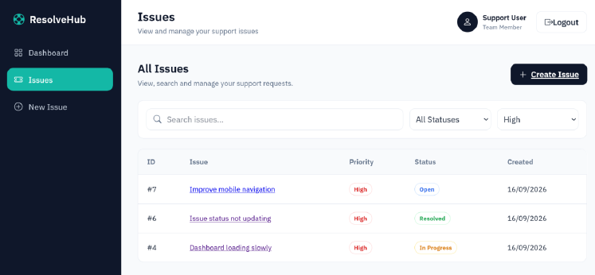
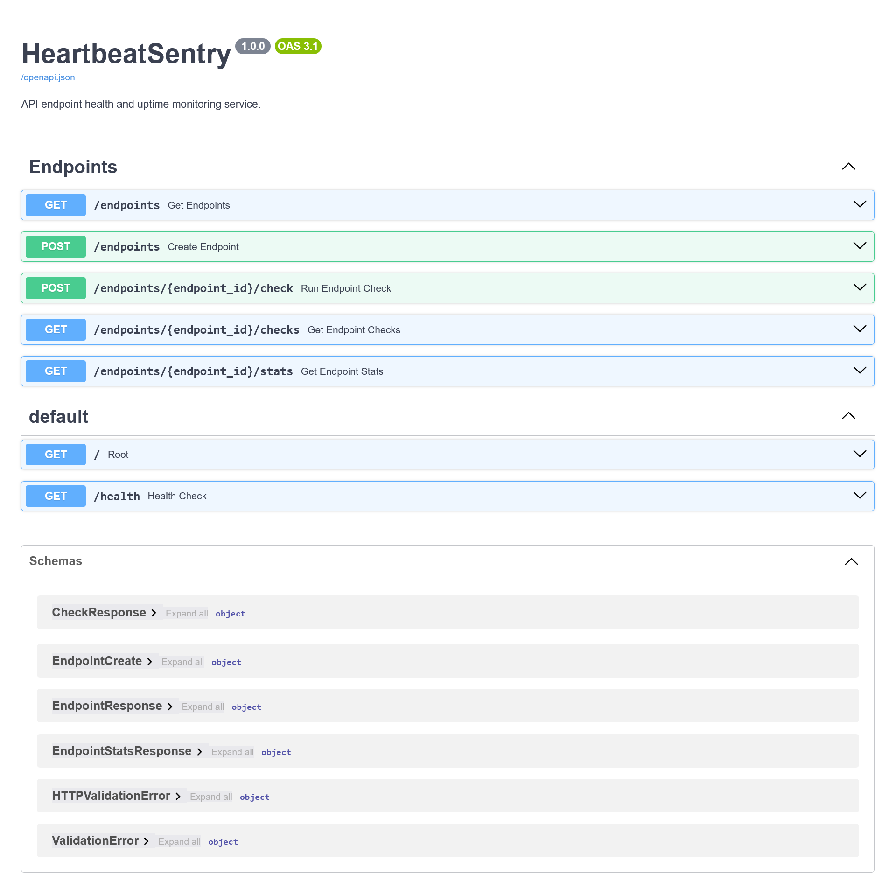
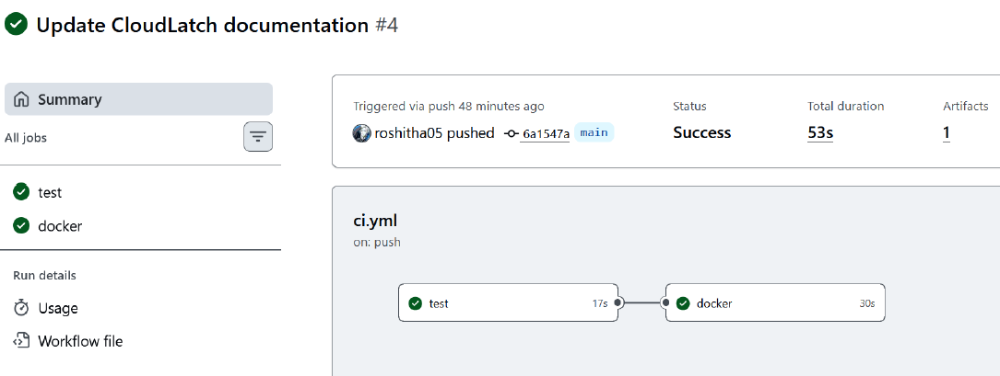

ResolveHub
Full-stack issue tracking and support management with authentication, per-user access controls, issue workflows, testing and CI/CD.
DEVOPS · BACKEND · SOFTWARE ENGINEERING
From applications and APIs to databases, CI/CD and infrastructure, I'm most interested in the parts of software that connect development with deployment.
01 / About
I started out mainly focused on cybersecurity, which gave me experience with application security, Linux, networking and cloud infrastructure.
While working on university and personal projects, I found myself getting more interested in software development itself — building features, designing databases, working with APIs and understanding how applications are tested, deployed and maintained.
That naturally led me further into backend development and DevOps. My security background also connects with my interest in DevSecOps, particularly around integrating security into development, infrastructure and deployment workflows.
I'm currently building across these areas while exploring graduate opportunities in DevOps, backend engineering and software engineering.
02 / Projects
Independent and academic work across software engineering, backend development, DevOps and security. For team projects, this section highlights my contribution rather than the complete project documentation.

Full-stack issue tracking and support management with authentication, per-user access controls, issue workflows, testing and CI/CD.

REST API for endpoint health checks, monitoring history, response data and availability statistics.

Containerised service focused on automated delivery and infrastructure as code using reproducible local AWS-style infrastructure.
Responsive room booking interface with User and Staff workflows, booking logic and browser-based persistence.
Team-developed news platform for publishing, discovering and personalising news content.
Earlier full-stack team project showing the progression of my backend, database and collaborative development experience.
Five controlled simulations covering authentication, networking, cryptography, network-layer trust and service analysis.
03 / Project details
A closer look at what I worked on. For team projects, this section separates my contribution from the complete project documentation.
Independent project · 2026
A full-stack issue tracking and support management application where users can create, search, filter and manage their own support issues.
Built authentication, protected routes, issue creation and management, dashboard statistics, filtering and per-user data access using Supabase Auth and PostgreSQL Row Level Security. Added automated tests and a GitHub Actions workflow for testing, linting, building and deployment.
React · TypeScript · Vite · Supabase · PostgreSQL · Vitest · GitHub Actions
Independent project · 2026
A backend monitoring service that stores endpoints, performs HTTP health checks and exposes monitoring history and availability statistics through a REST API.
Implemented endpoint registration, HTTP checking, persistence, monitoring history, statistics, validation, error handling and automated tests. The production service uses PostgreSQL while local development can use SQLite.
Python · FastAPI · HTTPX · Pydantic · SQLAlchemy · PostgreSQL · Pytest · Render
Independent project · 2026
A small service built to focus on containerisation, CI/CD and infrastructure as code rather than application complexity.
Containerised the FastAPI service, added health checks and automated tests, configured GitHub Actions to test and build images, published images to GHCR, and used Terraform to provision local S3 and SQS resources against LocalStack.
Python · FastAPI · Docker · Docker Compose · GitHub Actions · GHCR · Terraform · LocalStack
Independent project · 2026
A responsive room-booking frontend with separate User and Staff workflows.
Built the interface and booking flow, room management, promotional-code handling and confirmation experience. The demo uses localStorage for room and booking data and sessionStorage for the current login session.
HTML · CSS · JavaScript · Web Storage · GitHub Pages
Final Year Project · Team project · 2026
A news platform designed around publishing, discovery and personalised content, with features including categorisation, search, popularity, preferences, media, reactions and accessibility.
My backend work covered Categorisation & Tagging, Search & Filtering, Trending & Popular Content, User Preferences and Accessibility. I worked with the relational schema, Supabase/PostgreSQL integration, Row Level Security policies and SQL/RPC functions supporting these features.
JavaScript · Supabase · PostgreSQL · SQL · RLS · RPC functions
University team project · 2025
An earlier full-stack CSR platform developed as a university team project using a Node.js/Express backend, relational data and authentication/session handling.
Led testing activities by designing structured test cases and applying TDD practices to validate core functionality. Supported backend development and troubleshooting, contributed to the project's CI/CD workflow and documentation, and produced key technical sections covering testing, data-driven development and system considerations.
Node.js · Express · PostgreSQL · bcrypt · connect-pg-simple · CORS · Helmet
Controlled lab work · 2025
Five controlled security engineering simulations focused on authentication security, network communication, cryptography, network-layer trust and service discovery.
Implemented, troubleshot and validated exercises involving SSH authentication, TCP client-server communication, hybrid cryptography, ARP behaviour and UDP/MD5 service analysis in isolated lab environments.
Python · Linux · Paramiko · sockets · OpenSSL · Scapy · Nmap · Netcat
04 / Skills
Tools and technologies I've used across projects, coursework and infrastructure/security work.
Docker · Docker Compose · Terraform · GitHub Actions · GHCR · AWS · LocalStack · Linux · CI/CD
Python · FastAPI · Node.js · Express · REST APIs · PostgreSQL · SQLAlchemy · Supabase
TypeScript · JavaScript · React · Vite · HTML · CSS · Git · GitHub · Testing
Application Security · IAM · Row Level Security · Networking · Infrastructure Security · Cryptography
05 / Experience
Boraami · Volunteer team member
Contribute to application infrastructure security, resilience, disaster-recovery planning and threat analysis within the engineering team.
Boraami · Volunteer team member
Supported security planning, pentest preparation, mitigation planning and incident-response / disaster-recovery documentation for the product.
06 / Education
University of Wollongong · SIM, Singapore
2024 — 2027 (Expected)
07 / Contact
I'm currently exploring graduate opportunities across DevOps, backend engineering and software engineering, with a growing interest in DevSecOps.